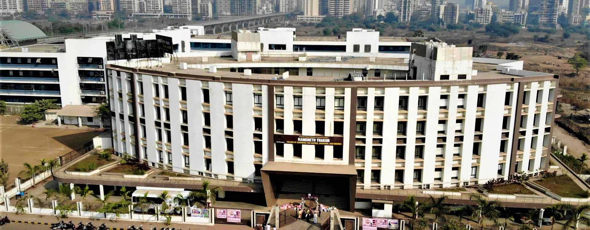
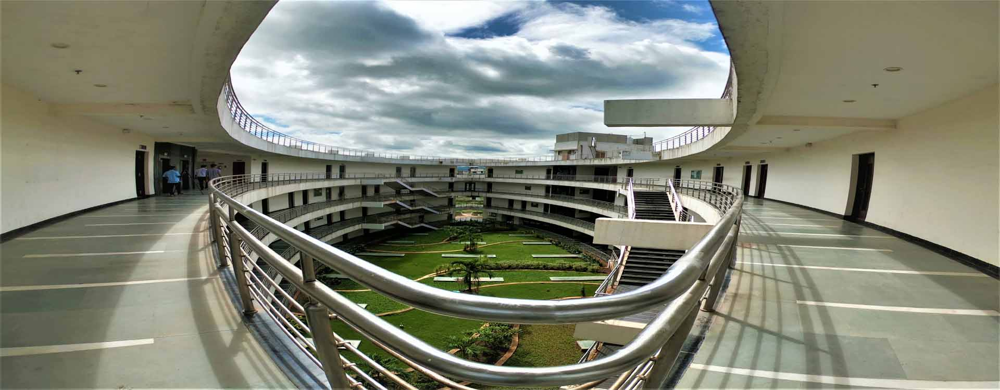
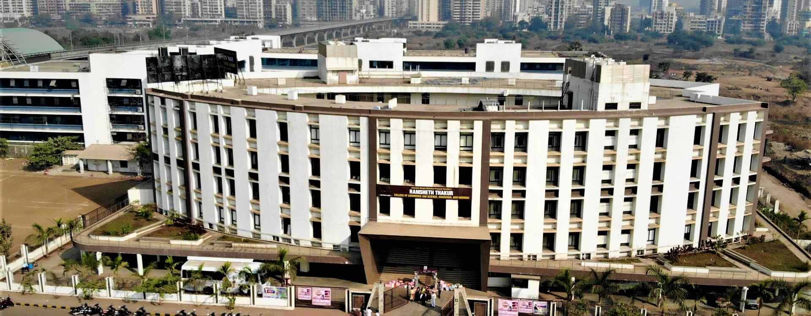
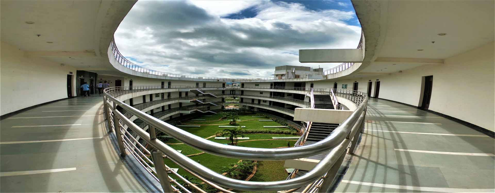

Welcome To RAMSHETH THAKUR HIGHER SECONDARY VIDYALAYA
Ramsheth Thakur Higher Secondary Vidyalaya, Kharghar (Eng.Medium) was initiated by J.B.S.P. Sanstha In June 2014. The institution aims to provide quality education for the allround holistic development of the student. The first batch of std XII had appeared independently for the Higher Secondary examination in the year 2015-16. The institution organizes several curricular and co-curricular activities for preparing students to face the challenges of Competitive world.
A visionary and an educationist with social commitment. Honorable Janardan Bhagat dreamt of a just social order where quality education is made available to the deprived section of the society. It was his dream that was brought into reality by his trusted lieutenants in establishing Janardan Bhagat Shikshan Prasarak Sanstha in 1992.
A seed was sown in Gavan in 1992 for the first educational institution of Janaradan Bhagat Shikshan Prasarak Sanstha. In 1994 Sanstha opened it's two more schools i.e. Changu Kana Thakur Vidyalaya, Marathi & English Medium at New Panvel. The Sanstha is on its sacred march of adding more educational institutions. In 1997 with permission from the Govt. of Maharashtra, Sanstha established its CKT Arts, Commerce & Science Degree College affiliated to the University of Mumbai. Now a days JBSP Sanstha is running 19 institutes in this area.
College Heads
It is with great pleasure that I welcome you into the portals of this Learning Community "Ramsheth Thakur Higher Secondary Vidyalaya", Kharghar

Smt. Durgadevi J. Mourya
In-charge PrincipalWe are Responsible for Learners…
To communicate the goals and objectives of the college systematically and clearly to all learners.
To offer courses those are consistent with goals and objectives of the college.
To provide clear information to learners about the admission process and rules and regulations of the college.
To use feedback from learners for the improvement of the college.
To facilitate effective execution of the teaching-learning and evaluation system.
To ensure that the learners' assessment procedure and systems are reliable and valid.
To promote values and social responsibilities among learners.